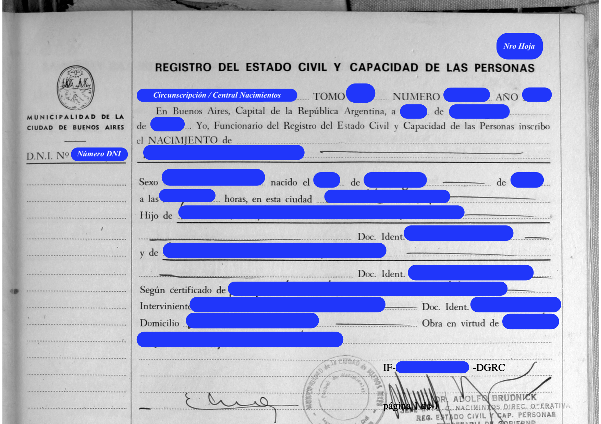

Templates de traducciones de actas de CABA al italiano
Traducción de acta de nacimiento (tipo 1) con firma ológrafa
Volver al inicio

TRADUZIONE (reemplazar lo azul por los datos correctos)
[Vi è uno stemma:] Comune della Città di Buenos Aires
Carta d’identità N.
{DNI Sujeto}
{Número hoja (impreso arriba a la derecha)} UFFICIO DELLO STATO CIVILE E CAPACITÀ DELLE PERSONE
{Circunscripción (o Central Nacimientos)}. VOLUME:
{Tomo acta}. NUMERO:
{Número acta}. ANNO:
{Año acta}.
A Buenos Aires, Capitale della Repubblica Argentina, addì
{Fecha inscripción (por ej, 26 gennaio 1994)},
Io, Ufficiale dello Stato Civile, iscrivo la NASCITA di:
{Nombre sujeto}
Sesso
{sexo (maschile / femminile)},
nato il
{Fecha nacimiento},
alle ore
{Hora nacimiento}, in questa città,
{Dirección del nacimiento}.
Figlio di
{Nombre padre}, carta d'identità
{Tipo DNI Padre} {DNI padre},
e di
{Nombre madre}, carta d'identità
{Tipo DNI Madre}
{DNI madre}, come risulta dall’attestazione di nascita
dell'ostetrica
{Nombre partera}.
Interveniente:
{Nombre interviniente}, carta d'identità
{Tipo DNI interviniente}
{DNI interviniente},
domicilio:
{Domicilio interviniente}.
Agisce in virtù dell’autorizzazione che si archivia.
[Seguono due firme e un timbro
con la scritta:] Dott. Adolfo BRUDNICK - Capo della Centrale Nascite - Direzione Operativa - Ufficio dello Stato
Civile - Segretaria di Governo. [Vi è un timbro tondo con la scritta:] CENTRALE NASCITE - COMUNE DELLA CITTÀ DI
BUENOS AIRES - UFFICIO DELLO STATO CIVILE.
{Código Acta (IF- ...- DGRC)}. Pagina 1 di 1.
[A tergo: vi è uno stemma] GOVERNO DELLA CITTÀ DI BUENOS AIRES. Foglio addizionale di Firme. Atto con firma olografa.
Numero:
{Código Acta (IF- ...- DGRC)}. Buenos Aires,
{Fecha firma ológrafa}. Riferimento: Atto Digitalizzato.
Documento ottenuto dal sistema GEDO [Gestione Elettronica di Documenti Ufficiali], composto da 1 pagina.
[Seguono i dati della firma digitale] GCBARCE - Assistente Amministrativo - Direzione Generale dello Stato Civile (SSGOBIER).
Aclaraciones y tips
-
Lo marcado en rojo debe adaptarse con atención según el caso.
-
En caso de tratarse del nacimiento de una mujer, nato debe cambiarse a nata, y
Figlio debe cambiarse a Figlia.
-
CENTRAL NACIMIENTOS se traduce como CENTRALE NASCITE, y
CIRCUNSCRIPCIÓN 13º se traduce como SEZIONE 13º.
- Los meses del año en italiano son: Gennaio, Febbraio, Marzo, Aprile,
Maggio, Giugno, Luglio, Agosto, Settembre, Ottobre, Novembre, Dicembre.
- Los días de la semana en italiano son:
Lunedì, Martedì, Mercoledì, Giovedì, Venerdì, Sabato, Domenica.